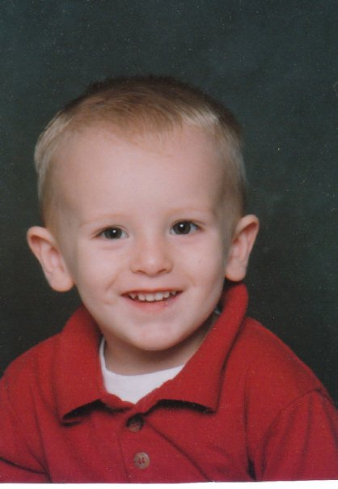
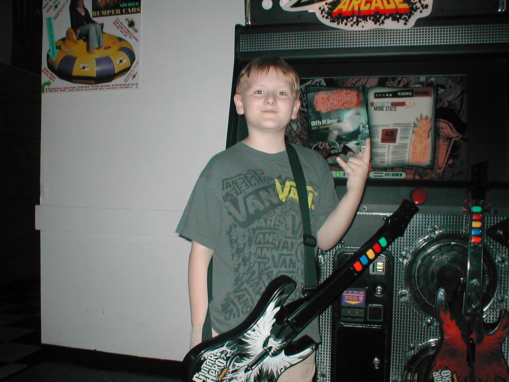
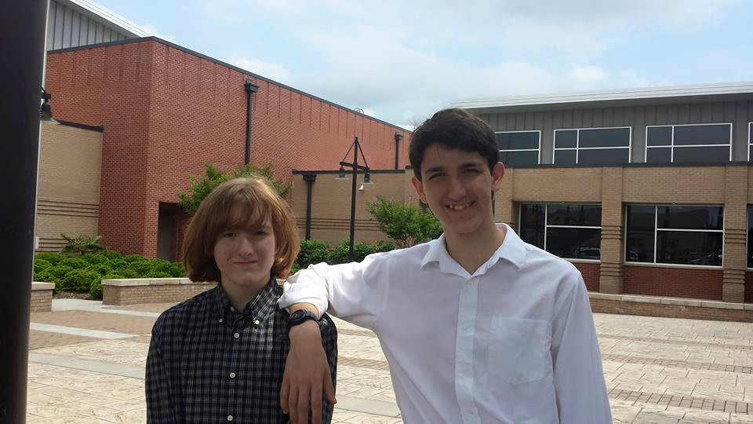
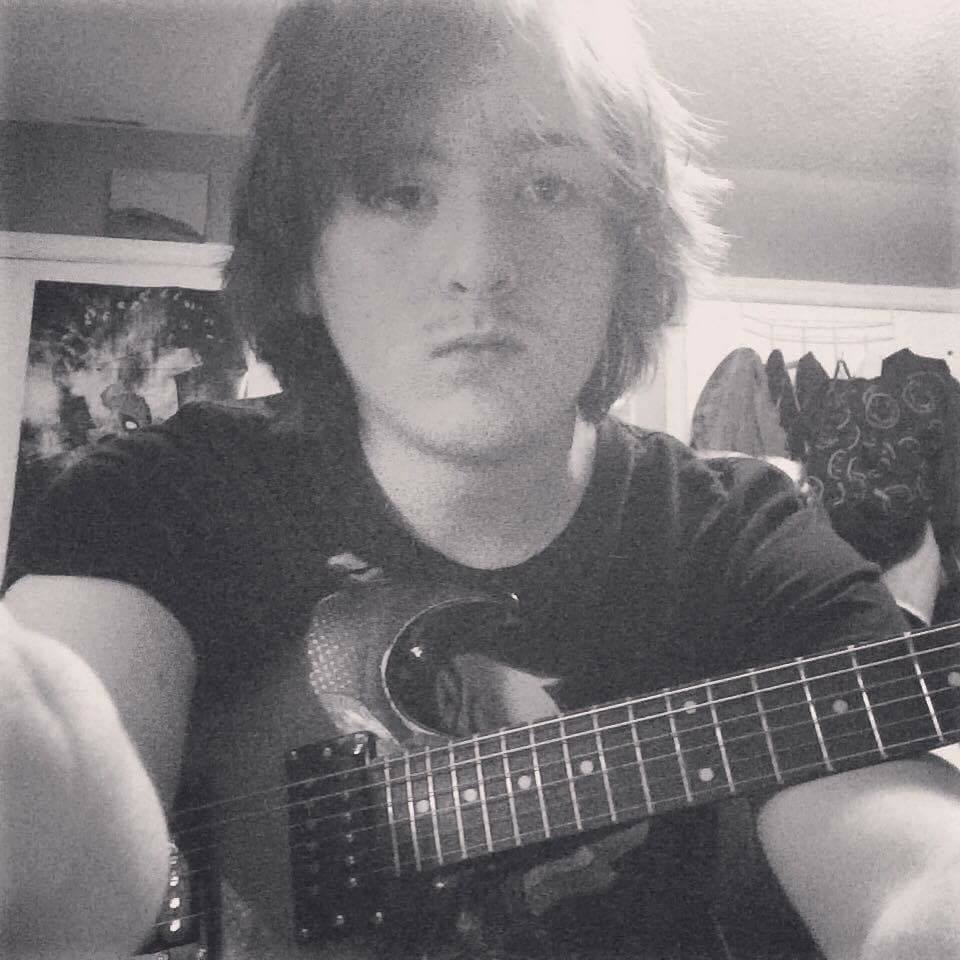
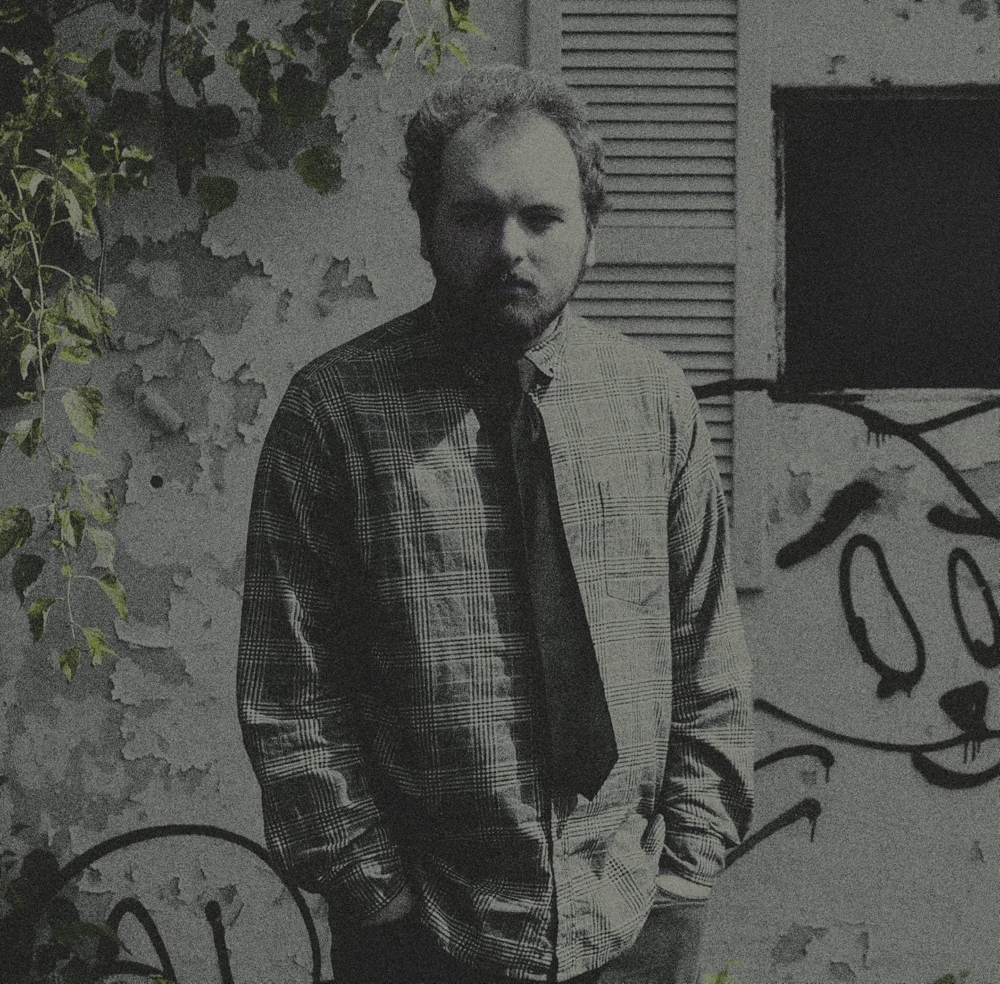

Who Am I?
If by some miracle you didn't guess, my name is Mark Hall. My closest call me Wahoo, as it was a name that came to be in my younger years (long story). I was born in the Chattanooga area and I've lived here ever since.
Something that people probably wouldn't guess about me unless they spent enough time with me is that I have high-function autism. I mention this first because I feel that it is an essential thing about me and why I am the way I am. I'm known to be kind of weird and probably more forgiving than anything. I try to be nice to everyone, as it feels like there's too much negativity in this world for any more to be brought onto it myself. It can be difficult sometimes as I also struggle with anxiety and depression but I try my best to do the right thing no matter what feeling may come over me at anytime.

Growing up I always had a really big interest in music. It never really mattered what genre but I was really big into rock music (and still am). Ozzy Osbourne was my idol when I was in elementary school. I once pointed to the TV when Ozzy was playing a live show and told my grandparents "That's Me!" I had written short songs about whatever I liked at the time and pretty much, just like now, music was a big part of my life.
Later I would make friends who would be big fans of music as I was. My friend Drew, who I knew in 5th grade, would later become a primary partner in creating music in 2018. In fact, two of the songs we've made for his project are on the "Welcome!" page if you didn't see them before.
Around freshman year of high school, my friend Angel would give me my first electric guitar and even wrote some music with me and Drew. This is where my journey of playing guitar would truly begin, and it started to become a big part of my music production which started in middle school.
Ever since, that's basically my life currently with more additions. I'm someone who likes music, art and trying to be the best person I can be.
